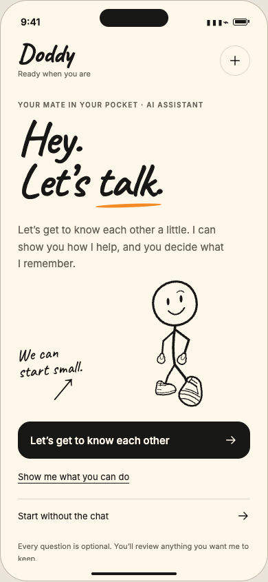

Hey. I'm Doddy.
Your mate in your pocket. Tell me the small stuff you don't want to lose, like where the spare keys went or the book someone swore you'd love, and I'll hand your exact words back when you need them.
Just an email. That's it.
An iPhone app in early testing. Doddy is an AI, not a person.


A little less to carry.
The code for the parcel locker. Which tin the spare keys went in. The book Marta recommended over coffee. Small things that vanish the moment you need them.
Doddy is a pocket notebook with a mate attached. You decide what goes in. Doddy helps you get it back.


Tell Doddy.
Type it the way you'd say it. Doddy keeps your exact words, along with when you saved them and where they came from.
Saved means saved. You only see the receipt once the note is safely stored on your iPhone. If something goes wrong, your words stay right where you typed them so you can try again.
Up to 5,000 characters. Room for a whole recipe.


Ask later.
Search with the words you remember: keys, Marta, book. Doddy shows the notes that match, in your original words, with where and when each one came from.
I couldn't find that in your saved memories.


In testing
Or just say it.
Tap Talk to Doddy and ask out loud. Doddy looks through your notes and answers from what you saved.
Doddy only listens while the voice screen is open. If you say something worth keeping, Doddy asks first, and nothing is stored until you tap Save.
While you talk, your voice and the notes Doddy looks up are sent to ElevenLabs to run the conversation. Voice hasn't been tested on a real iPhone yet.

Save this note?
“Marta's book is The Hobbit.”
Save Don't saveYour notes, your call.
- Correct a note and the original stays, so you can always see what you first wrote.
- Copy or export everything as JSON or plain text.
- Delete one note, or all of them. They're gone from search straight away.
- No account. Your notes live on your iPhone.
Doddy is an AI, not a person. Notes stay on your iPhone; talking uses ElevenLabs only while a conversation is open. Reminders and other apps aren't built yet.